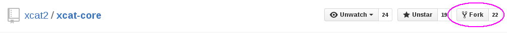

Fork a repository¶
Forking a repository is taking a copy of a GitHub repository and associating it to your own account space so you can make changes to the code base. Since you own this copy, you will have fetch/push access to the repository.
We will first create a fork on the xcat2/xcat-core project so that we can work on functions without affecting the mainline (or upstream) code. Additionally, by creating a fork, you are able to generate pull request so that the changes can be easily seen and reviewed by other community members.
In GitHub UI, find a project that you want to fork and click on the “Fork” icon.
Note: The target is your own account space
After the fork is created, there is a copy of the repository under your own account
<userid>/xcat-core<– forked copyxcat2/xcat-core<– upstream
Clone the forked repository¶
On your development machine, clone the forked repository from your account:
Note: Ensure the clone is from <userid>/xcat-core and not xcat2/xcat-core
$ git clone git@github.com:<userid>/xcat-core.git
This now becomes the origin remote repository:
$ git remote -v origin git@github.com:<userid>/xcat-core.git (fetch) origin git@github.com:<userid>/xcat-core.git (push)
Configure an upstream repository¶
In order to get updates from the upstream project:
xcat2/xcat-core, you will need to add another remote repository to fetch from.$ git remote add upstream git@github.com:xcat2/xcat-core.git
View the configured reposotories:
$ git remote -v origin git@github.com:<userid>/xcat-core.git (fetch) origin git@github.com:<userid>/xcat-core.git (push) upstream git@github.com:xcat2/xcat-core.git (fetch) upstream git@github.com:xcat2/xcat-core.git (push)